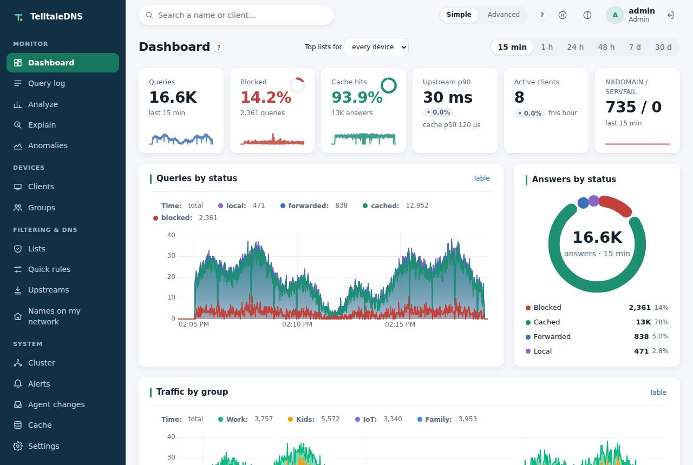

Observability first
Know what your network is doing.
Hear about it when it changes.
Every question is counted, timed, explained, and searchable. When something needs attention, TelltaleDNS tells you where you already look: your inbox, your phone, or your team's channel.

Watch
Everything a question went through
Dashboard
Queries, blocked share, cache hits, NXDOMAIN, active devices, and latency percentiles, per minute for a week and per hour for over a year, by status, type, response code, and group.
Query log
Every question with its device, group, answer, and timings, in a compact columnar log built for search: filter by name, device, status, type, or latency, and see Why? on any row (the list and line that decided it).
Live view
Questions as they happen, filtered on the server and rate-capped, across every node of a cluster, each row naming the node that answered.
Latency, honestly
Percentiles per answer path, query type, upstream, and device. In a cluster they're computed from every node's merged histograms, so a slow node shows up in the p99 instead of being averaged away.
Analytics in one line
from -7d | where group = kids and status = blocked | top 10 domain: vqlog answers questions no dashboard has a tile for, with its cost shown up front.
Try a list before it blocks
Put a list in shadow mode and see what it would have blocked on your network (names, devices, how often) before turning it on. Names that devices kept retrying, or that someone unblocked right after a block, show up as likely over-blocking.
A second opinion
Per upstream: DNSSEC verdicts, and the error codes it attaches (Blocked, Censored, Filtered mean it filters). Optionally, a small sample of questions is asked again of another upstream and the answers compared, so an upstream that quietly filters or rewrites shows up, with both answers side by side.
Asked like a device would
Every node asks each of its listeners a question over UDP, TCP, DoT, DoH, or DoQ every 30 seconds, plus any address you add (a load balancer in front), and watches each certificate's expiry. A listener that stops answering, or a certificate about to lapse, shows on the health icon and can alert.
Only what matters
Keep connectivity checks, time servers, or a monitoring probe out of the log and the statistics, with one switch in Settings or in your Git configuration. They're still answered and still counted in Prometheus. A list whose content stopped changing for a month is flagged as stale, before it quietly falls behind.
From a spike to the query
Every latency bucket on /metrics carries an exemplar, a recent query that landed in it. Click its dot in Grafana and the trace ID opens that query in the log. Sampled and slow queries can go to your tracing backend as OpenTelemetry traces, with the same ID.
Is the cache big enough?
Each node estimates what a cache 25%, 50%, or 100% larger would have answered from memory, from a small sample of names asked again after they were evicted, and says whether to grow it, shrink it, or leave it.
The machine too
Memory, CPU, disk, and temperature for every node, with the last hour of history and warnings, on the Cluster page and in metrics.
Health at a glance
One icon in the menu for the whole cluster: healthy, degraded (an upstream or node down, a device rate-limited, a list failing), or severe (no upstream in a group answering, DNS not served). Click it for the reasons and where to look; the same answer is in the API and for AI agents.
A month in one number
Service-level objectives for answers that work (not SERVFAIL) and answers that are quick (within 250 ms by default), each with an error budget for the month. The dashboard shows how much is left and how fast it's going; a fast burn turns the health icon amber and can alert, while a single failed lookup on a quiet night doesn't. Prometheus gets the same rules.
Notice
Device anomalies
Each device is compared with its own usual behavior, learned over its first week. Findings come with their evidence (what was seen, the usual value, the bar it crossed) and never block anything on their own. In a cluster you see every node's findings in one list; acknowledge one once you've looked, and it stops counting as new on every node.
Rate spikes and drift
Many more questions than usual for this hour, or many new domains in a day.
Beaconing
Regular call-home patterns: the same domain at a steady interval, the signature of telemetry and malware alike.
NXDOMAIN storms
Bursts of failed lookups from one device: a broken app, or something hunting for a server.
New and generated-looking domains
Each device's first-seen domains, scored for how machine-generated the name looks (DGA).
Tell
Alerts, where you'll see them
Rules watch the whole cluster from its primary, so you get one message, not one per node. A condition must hold for a while before it alerts, and a "Resolved" follows when it clears.
upstream_down | an upstream stops answering (its circuit breaker opens) |
|---|---|
node_down, sync_lag | a cluster node drops out, or falls behind the configuration |
list_failing | a blocklist stops updating |
servfail_rate | failures climb above a share of queries |
slo_burn | an objective spends its monthly error budget too fast |
probe_failing, cert_expiring | a listener stops answering its own check, or its certificate is about to expire |
anomaly, new_device | a device behaves oddly, or a device appears for the first time |
disk_full | a node's data disk fills up |
plan_pending | an AI agent's change waits for your approval |
update_available | a newer TelltaleDNS build is out |
maintenance | a node goes into maintenance, and when it's back |
A node in maintenance (planned work: a Pi's SD card, a move, an upgrade) is left out of the other rules and the health icon until its window ends, so a planned stop never pages you. It keeps answering whatever still reaches it.
Destinations: email (any provider's SMTP: Gmail with an app password works, no mail server of your own), ntfy and Gotify push to your phone, Slack-compatible channels (Slack, Mattermost, Discord), or any webhook.
[[alerts.destination]]
name = "inbox"
type = "email"
url = "smtp://smtp.gmail.com:587"
from = "you@gmail.com"
to = ["you@gmail.com"]
username = "you@gmail.com"
password_file = "/run/secrets/smtp"
[[alerts.rule]]
name = "Upstream down"
when = "upstream_down"
for_secs = 60
to = ["inbox"]Email is always encrypted when a password is sent (STARTTLS or TLS, no fallback). Secrets stay in files, out of the configuration and Git.
Export
Into the tools you already run
Prometheus and Grafana
A /metrics endpoint with query, cache, upstream, filter, cluster, and host series, and a ready-made Grafana dashboard: service level, traffic by transport, latency, upstreams, filtering, cache, and the node itself (uptime, restarts after a crash or an OOM kill, CPU, temperature, disk). The Helm chart can add a ServiceMonitor, and alert and SLO burn-rate rules.
OpenTelemetry
Metrics, query events, and sampled or slow queries as traces, over OTLP/HTTP to a collector or any OTLP backend.
Event sinks
Every query as a JSON line to a file, to syslog (RFC 5424, UDP or TCP), or batched to a webhook, with the same fields as the query log.
dnstap
Raw query and response messages in the standard dnstap format, for DNS-specific tooling.
None of this sits on the query path: exports run in their own tasks with bounded buffers, and a slow collector loses events (logged) rather than slowing DNS down.